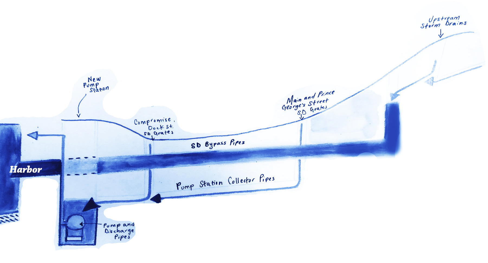

Oct. 29, 2021 flood encroaching on Dock Street in Annapolis, Md. The unusually high waters were a result of powerful winds and high tides. Photo by Emmett Gartner.
O
ctober 12, 2019 marked marked the Severn River’s most recent attempt to leap the United States Naval Academy and the City of Annapolis’s coastal barriers.
High tides, a hunter’s full moon, and a fleeing tropical storm coalesced to inundate the City with water that shutdown its harbor and primary business area, City Dock.
Ryan Lamy, owner of Pip’s Dock Street Dogs, a popular hotdog joint that lines City Dock, described the event nightmarishly.
“Our entire store was flooded. All of the way to the back of the shop. Rarely does it fill the entire store, and this time it was about a foot deep,” Lamy recalled.
Ryan Lamy's hotdog restaurant, Pip's, experienced similar water damage during the Oct. 29, 2021 high tide event. Photo by Emmett Gartner.
Mention of the Severn does not evoke the same emotions as the mighty Mississippi. Far fewer musicians have dedicated songs to its murky, modest flow, nor does the backbone of American agriculture rely on its nutrients.
All told, its waters are comparatively mute to the Mississippi’s intense clamor, word of which panged across newswires throughout the United States in 2019 as it experienced weeks of devastating flooding.
Nevertheless, the Severn, too, is flooding, and residents of its banks are flailing for solutions to suppress the water’s steady march, foreshadowing the consequences of climate change for coastal communities of the United States.
After the first year, I gave up on sand bags. They keep some water out, but they also keep some water in.
- Ryan Lamy, owner of Pip's Hot Dogs
The Severn’s ten-mile expanse incises the heart of Maryland and bleeds into the Chesapeake Bay. Freshwater from the Severn, and a multitude of other tributaries like it, merge with saltwater from the Atlantic to form the Chesapeake, breeding a highly productive ecosystem in the process — the Chesapeake’s fisheries and seafood industries supply the surrounding region with $890 million in economic benefits annually.
Because of the Chesapeake’s link to the Atlantic, however, productive fisheries come at a cost. Both the Chesapeake Bay and the Severn River are disproportionately chained to the will of rising sea levels. As the rest of the globe’s sea levels rise between 1.7 and 3.2 millimeters per year, the Chesapeake’s subsiding land, a product of the last Ice Age, bestows the region a rising rate of 3.2 to 4.7 millimeters per year.
Many Maryland coastal communities are in the process of retreating or have already vanished because of these unprecedented rates.
Holland Island, a historic town that once housed 260-350 residents off of the southeastern tip of Maryland, surrendered its last structure to the Chesapeake Bay in 2010, ending a decades-long battle with rising tides.
Neighboring Deale Island residents, meanwhile, are scrambling to sell or foreclose on their homes as the cost of defending against intrusive water proves to be insurmountable for some.
On the Severn’s southwestern bank, nested at the river’s mouth, similar options await Annapolis and the United States Naval Academy (USNA). One serves as the policy hub of the state; the other is the cradle for the nation’s premier aquatic navigators. Their rich history and magnificent architecture, birthed by a cultural reliance on the Severn and Chesapeake Bay, make the irony of losing these assets to rising tides evident to all.
Flood waters creep past the Naval Academy's Commodore John Barry Gate from Prince George's Street. Photo by Emmett Gartner.
Historically, the duo have utilized a series of bulkheads, seawalls made of wood, rock, or concrete, along the coastline to protect their land from erosion and to hold back the Severn’s waters.
Areas not fortified with bulkheads or the cement base of roads rely on patches of sediment and native plants to halt high tides.
Before 2019, these structures and spotty vegetation were the last lines of defense for a City that leads the nation in nuisance flooding—flooding that occurs from high tides on days without precipitation—experiencing an average of 39.3 flood days per year between 2007 and 2013.
These defenses are of little help when the city floods simultaneously from the inside and outside, however. City Dock business owners like Lamy have found this abundantly clear.
Failing Infrastructure
Since 2009, Lamy has been slinging hotdogs and french fries for the greater Annapolis community while flood waters consistently attempt to shut down his business. Whenever water sidles through the front door of his shop, health department code forces him to close until it fully retreats.
In years past, he would seal the doorway with sandbags that Annapolis officials plopped down at the center of City Dock as an offering to its businesses.
“After the first couple of years I gave up on the sandbags,” Lamy confessed. “On the days that we do need the bags, the high tide flood waters come up through the storm drains and then out of our floor drains. The sandbags keep some water out, but they also keep some water in.”
Annapolis’s tendency to flood from within inspired its most recent stopgap flood mitigation project: underground pumps that return flood waters to the harbor and drainage gates that keep them out.

A diagram of the city's proposed pump system. Artwork by Alexis Martinez.
Ward 1 Alderwoman Elly Tierney, who represents Lamy’s neighborhood, has used her engineering background to inspire and support these efforts in City Council, but also recognizes that they are not enough.
During events like October 12, where the tide swelled 4.5 feet above its average levels, the pumps are overwhelmed and ineffective. They can only bear a maximum load of 3 feet above the base average, and the Severn is expected to rise by 1.5 feet by 2050, further worsening the odds of flooding.
“It’s only the first phase of a complete stormwater management system,” Tierney admitted. “Unfortunately, [that day] was a dire display of Mother Nature and our inability to control such flooding without permanent measures.”
The Kunta Kinte-Alex Haley Memorial is often the first to be photographed during an Annapolis flooding event. Annapolitans can gauge how serious the water heights are based on how submerged the bronze statues are. Photo by Emmett Gartner.
The City has only recently unfurled long-term resilience plans. This includes a $50 million design to remodel City Dock and install a flood retention system with expanded flood barriers.
Immediate reinforcements for the pumps under City Dock are currently under construction. City officials have also plotted out the initial plans for a pump station and wet well a few blocks away, on the opposite side of the harbor. The wet well, a cavernous underground hold for flood waters, would capture water from storm drains and use the pump station to return it back into the harbor.
The pump station and wet well’s construction, however, hinges on a pending $3 million grant from the Federal Emergency Management Agency that, even if provided, would only cover a portion of the plan’s total cost. The second phase of the current plan, which would supply additional pumps to City Dock, remains unfunded.
Dan Nees, a sustainability researcher at the University of Maryland and a member of the City’s subcommittee on resiliency, raised similar concerns over the $50 million long-term resilience plan.
Upon its adoption, Nees praised the City’s bold mitigation strategies, but noted, “It’s just a matter of how much money is available and how innovative the city is willing to be.”
Residents, politicians, and resilience experts alike are calling for the adoption of a permanent adaptation plan.
A recent study from Nees and other University of Maryland researchers urgently highlighted Annapolis’s need to “move forward quickly and aggressively to address infrastructure implementation and financing needs.”
Without significant funding, Annapolis’s current political trajectory, flood mitigation projects included, does not provide a sufficient vision for safety in a changing climate.
Prospects of Change
In September 2003, Hurricane Isabel barreled into the North Carolinian coast as a Category 2 Storm, then trudged north through Virginia towards the Chesapeake Bay. When it approached Annapolis, concerns over driving winds and rains paled in comparison to the threats of Isabel’s storm surge. Its low pressure presence above the Chesapeake Bay pushed tides upwards and drowned the Annapolis area with 7.58 feet of water, flooding classrooms at the USNA and leaving City Dock only navigable by kayak.
The disastrous impacts fester in the minds of Annapolitans, with talk of “the next big one” in rotation whenever hurricane season approaches. The City’s next door neighbor is taking a more actionable approach.
The USNA’s cost for storm repairs totaled a whopping $120 million. Nuisance flooding and the slew of storms after Isabel have since tacked onto the bill.
“With greater frequency and increased amounts of water, the negative impacts are being increasingly felt throughout Naval Academy operations,” said Edward Ziegler, a spokesman for Naval District Washington.
“Following Hurricane Isabel in 2003, the Naval Academy, in partnership with the Army Corps of Engineers, developed mitigation strategies, such as wet and dry floodproofing, to address major storms and stormwater surge,” Ziegler added.
According to Ziegler, the USNA has already implemented many of these strategies, including an underground reservoir to collect and discharge stormwater, door and window dammings for low-lying structures, raising ground floor elevations on new construction, and the use of flood-proof building materials on ground floors. More recent resilience efforts involve stormwater repair projects to restore seawall and shoreline along the USNA’s perimeter.
This cohesive response, product of the federal defense budget, displays a level of urgency that Annapolis has struggled to garner amongst its broad range of stakeholders and decision makers.
In order to receive a bulk of the funds for their resilience projects, the Mayor and members of the City Council will have to argue before the Maryland General Assembly, which has been slowgoing out of legislative session; it does not convene until January 8, 2020.
Businesses on Prince George's Street prepare for the Oct. 29, 2021 flooding event with delicately placed sand bags, provided by the city. Photo by Emmett Gartner.
Priorities in the City’s own political agenda further undermine the objective of getting resilience financing onto the state’s legislative docket.
While sea level rise looms over the City, so do other municipal crises. Issues regarding the City’s public housing policies have arisen alongside major updates to its transit plan. Then, behind these items, remain the lengthy bureaucratic processes that keep any city government operating.
Until the City puts [climate change] on the forefront, public urgency won’t rise up to the level it should be.
-Eleanor Tierney, Annapolis Alderwoman, Ward 1
Alderwoman Tierney commented on this gridlock. “Due to other agenda items sponsored by the Mayor, I have not been able to elevate [flood mitigation] to our top priority. I trust that the Mayor will get before the General Assembly and ensure that we get money to at least fund phase one of our stormwater plans.”
There are also understandable difficulties that come with translating climate change’s broad temporal scale into immediate action. Whereas flooding frequently damages businesses, like Lamy’s, near City Dock and obstructs transportation infrastructure with standing water, residencies have suffered noticeably less damage from storm and flood events like Isabel, where houses were left largely unscathed by high tides.
Residents outside of the City Dock area, as Tierney explains, are relatively quiet on these issues since the flood waters have not reached their front doors.
How much longer they will be spared depends on whether the worst case or best case scenario of sea level rise occurs, and Tierney is not willing to take that risk.
“Until the City puts [climate change] on the forefront, public urgency won’t rise up to the level it should be. We need to beat the drum on a state and national crisis. Another Isabel is imminent.”